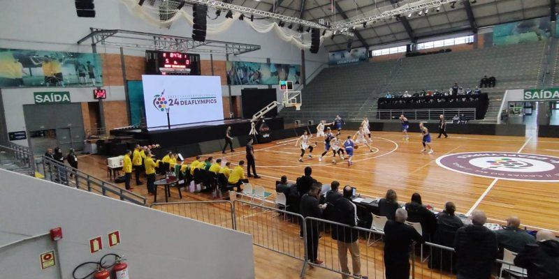
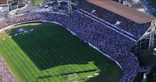

Esporte e Lazer em Caxias do Sul
A cidade oferece muitas opções para quem gosta de esporte e lazer:
Esportes & Lazer em Caxias do Sul

Parque dos Macaquinhos
Grande área verde com ciclovia, quadras e pistas para caminhada ou esporte ao ar livre.

Ginásio SESI
Centro esportivo para atividades indoor e eventos comunitários promovidos pelo SESC.

Estádio Centenario
Casa do Caxias, utilizada em grandes jogos de futebol e eventos esportivos profissionais.